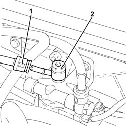

1044B16 DELIVERY ADJUSTMENT VALVE - R R
- Path
- Procedures > 10 ENGINE UNIT > 1044 FUEL CIRCUIT PUMP/S AND DEVICES > 1044B FUEL FILTERS > 1044B16 DELIVERY ADJUSTMENT VALVE - R R
- Kind
- repair procedure (removal / refitting; the operation number is the code)
- Applies to
- engines: 1.9 JTD 16V; all production periods
- Interactive page
- https://sloeber94.github.io/elrnDB-aGt/en/#/125001011
Applies to: engines: 1.9 JTD 16V; all production periods
 Removing
Removing
 Refitting
RefittingProceed with removal
- 1016A10 sound-proofing cover - r + r
1. Disconnect the rapid attachment on the fuel return pipe to the fuel return manifold pipe, fuel filter side.
2. Undo the connector with the fuel supply/return adjustment valve incorporated.

Applies to: engines: 1.9 JTD 16V; all production periods
Refitting
RemovingTighten the connector with the fuel supply/return adjustment valve incorporated.
Connect the rapid attachment of the fuel return pipe to the fuel return manifold pipe, fuel filter side.
Proceed with refitting
- 1016A10 sound-proofing cover - r + r
.